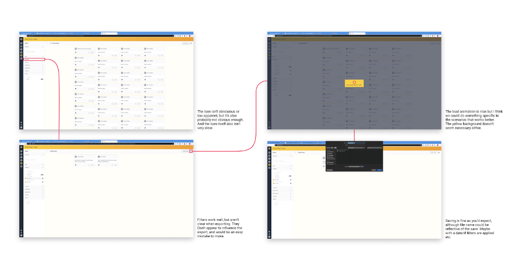
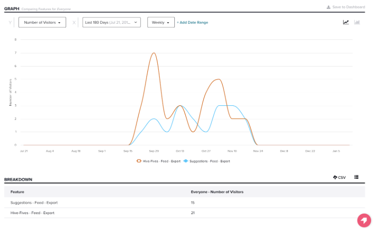
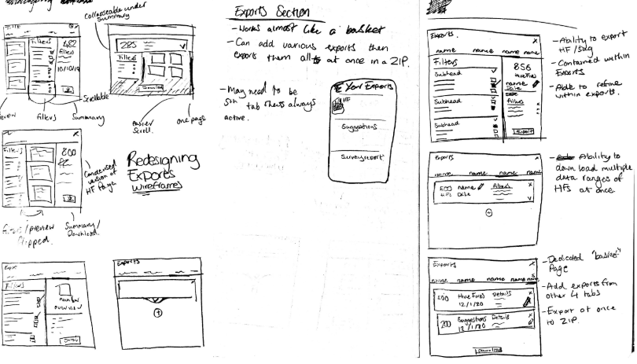
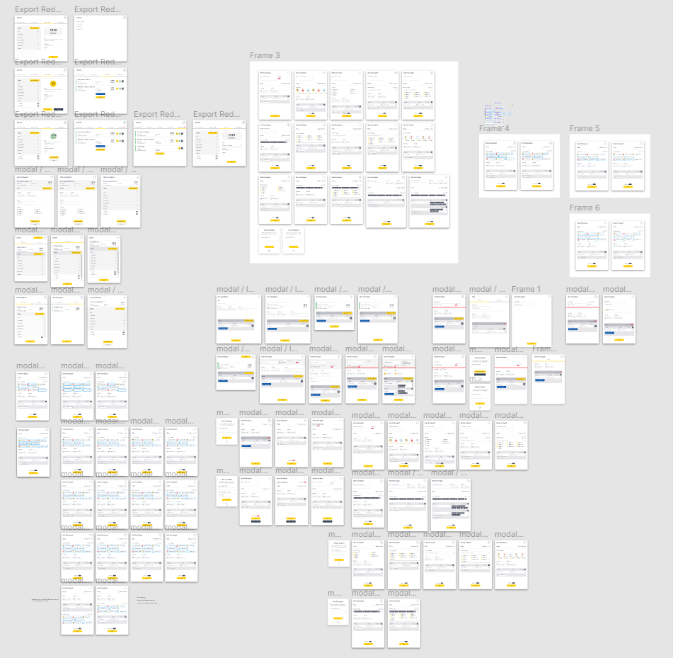
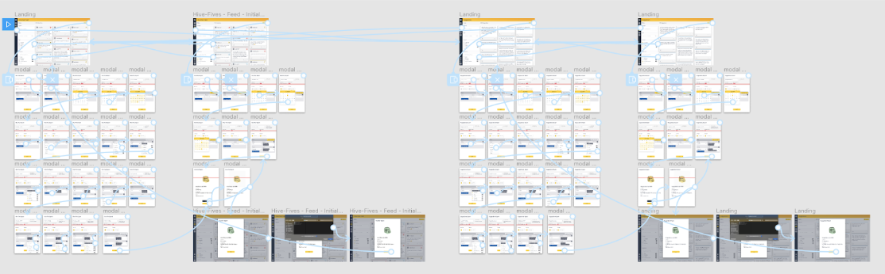
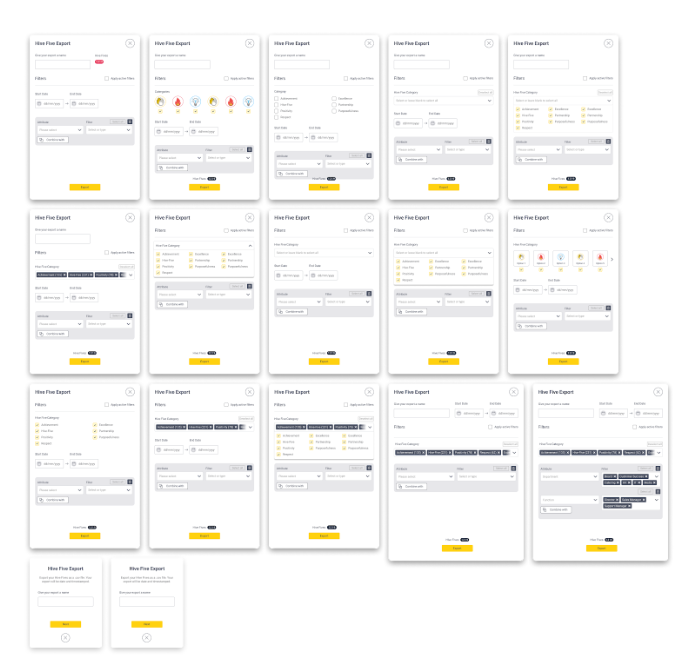
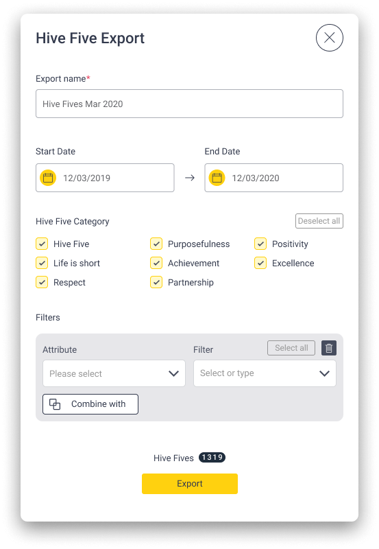
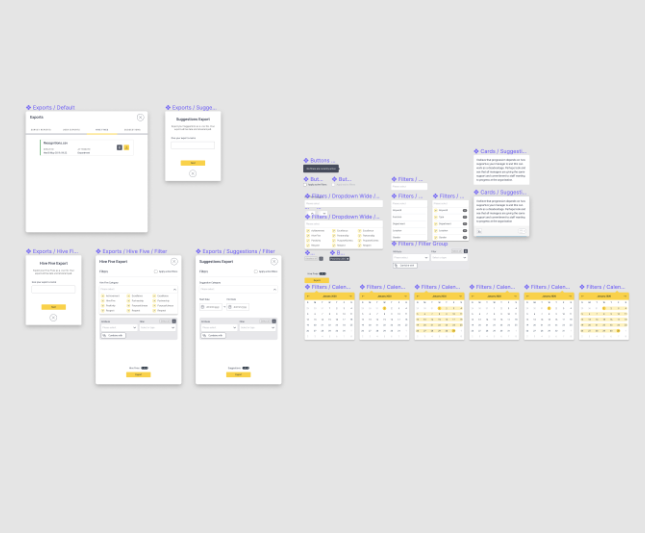

This feature had very low usage—only 36 interactions in six months—so the redesign needed to encourage engagement without overbuilding. I worked in a strict MVP mindset, prioritising necessary functionality over nice-to-haves that would consume development time.

The project was highly iterative, and I wanted to be careful with changes. I spent a lot of time on quick wireframes with small adjustments until the solution felt right, then tested and refined based on feedback.


The initial prototype was in a good spot but still needed some tweaks. After speaking to J and E we came to the following conclusions. The grey banner I’d added at the top needed to change, as it doesn’t fit with the rest of the system. For Hive Fives, it made more sense to leave the HF category outside of the filter builder section and have it seperate. Rethink the ‘overview’ info at the top being shown.

Cut out overview info at the top, moved total HFs to the bottom. Made ‘filters subheading to help distinguish areas. Moved ‘active filters’ to the top and changed from button the checkbox Removed heading from filter group.

After going through refinement, I had final designs for the export modal. Testing reinforced my confidence in the direction.
On the surface this looks like a small feature, but it was a useful early lesson in MVP thinking and the value of careful UX work on low-traffic flows.

One mistake in the initial prototype was not using Figma components, which made edits harder than they needed to be.
I rebuilt the individual elements as reusable components—a lesson I have carried into every project since.

As a small nice-to-have, I developed a short loading animation for when users exported their dataset. Small interactions like this can add a sense of quality to otherwise functional flows.